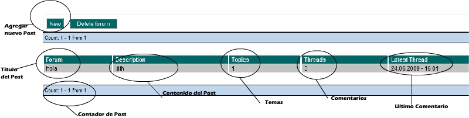
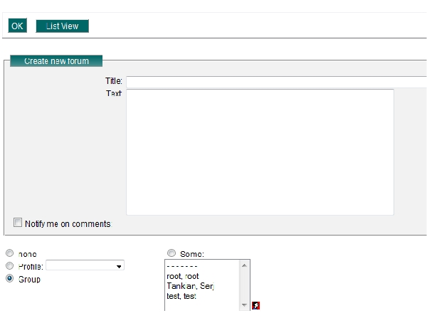
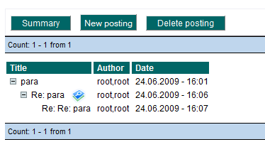
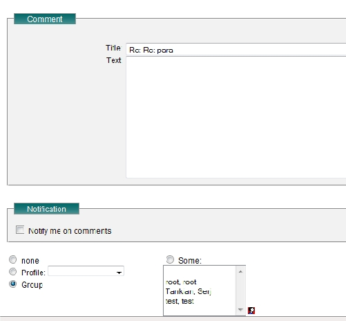

Foro (Forum)En el modulo de Foro nos muestra una sección con temas de conversación con la posibilidad de discutirlos o agregar algun comentario. En la sección principal nos mostrara los post actuales de las que dispone el grupo, con la posibilidad de categorizar en directorios de tipo árbol. Para abrir algun directorio bastara con darle click al signo de más el cual expande el directorio mostrando el contenido de los archivos. Si damos click al nombre nos redirecciona a la opción de modificar datos sobre el post, la interfaz es la siguiente.  Si le damos en new nos aparece la siguiente ventana en donde solo bastara con darle un titulo, permisos de grupos y en descripción el mensaje del post, la ventana es la siguiente, bastara solo con ok para guardar.  Para agregar un comentario o verlos comentarios darle click en el titulo del post, nos mostrara la siguiente ventana.  Si damos click en Summary nos regresa a la pantalla anterios, en newposting agregamos un comentario al mensaje raiz, en delete posting borra el comentario raiz, con todos los demas. Si queremos contestar un comentario que no sea raiz le damos click al comentario y automaticamente nos crea una contestación de la siguiente forma. 
|